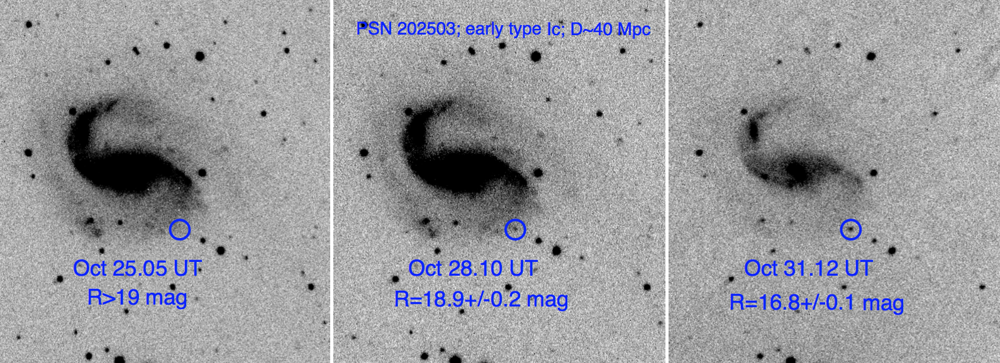

I am a general observational astrophysicist. For this half decade, at least, I am focusing on Near Field Cosmology, young and nearby supernovae and reverberation mapping of active galactic nuclei. I will probably try something else some time soon.
If you are an undergraduate looking for a research opportunity, please contact me. No real experience is necessary. All I expect is enthusiasm and reliability.
D<40 Mpc (DLT40) Survey

What are the progenitors of different kinds of supernovae? How do these stars
explode? One of the best ways to gain insight into SN progenitors and their explosion physics is with early data in the hours to days after they explode. The early
emission from SNe is generally dominated by the explosion itself rather than radioactive decay
and can be used to measure the radius of the exploding star (Piro & Nakar 2013), a fundamental
property of the explosion. The early light curve can also measure properties of a companion star
(Kasen 2010), the presence of which is still an outstanding question for SNe Ia and thought to be
critical for generating many stripped-envelope SNe. The rise of the early light curve can measure
the outer 56Ni distribution (Piro 2012), an important constraint for explosion models. Furthermore,
observations on these timescales can even help us study entirely new classes of transients, including
the radioactively powered kilonovae that are expected from neutron star mergers (Metzger et al.
2010) and will be crucial for gravitational wave detections, and the shock breakout expected during
black hole formation (Piro 2013), the birth of which have never been observed.
Motivated by the early-time science opportunities described above, we
have begun a one-day cadence SN search in nearby galaxies with a
rented PROMPT 0.4m telescope (located at CTIO, Chile) which will
uncover ∼10 SNe per year within a day of explosion. Named the DLT40
survey, the general strategy is to observe galaxies within D < 40 Mpc
every night down to a survey depth of V∼19. DLT40 is funded for three years, and it will be run by
Project Scientist S. Valenti and a new postdoctoral researcher will be
hired this cycle.
I am hiring a postdoc to run a new search for supernovae within one day of explosion. Please email me directly if you have any questions! Here is the job ad.
Near Field Cosmology
One of the main goals of our research group is to find the faintest and smallest galaxies in the
Universe. Why do we care about these ‘ultra-faint’, barely detectable objects? Well, they are
among the most dark matter dominated objects that we know about, and they are a relatively
simple laboratory for understanding how stars form within dark matter halos in general. Not only
this, but so-called dwarf galaxies are the basic building blocks for larger galaxies; galaxies like our
own Milky Way gobble up smaller galaxies to gain gas and mass to become what they are today.
Disturbingly, the number of faint dwarf galaxies around our own Milky Way seems to be a factor of
100 less than what we expect from our current models of galaxy formation.
The image to the left shows one of our newly discovered dwarf galaxies – named Antlia B – which is in our back yard at only ~4 million light years away. In the image, the new galaxy is the over density of stars clumped in the middle; this nearby galaxy was likely hidden before because of the bright, saturated foreground star and
background spiral galaxy just above it in the image. Our group has discovered dozens of
similar galaxies in our neighborhood in order to understand their dark matter properties and their
role in galaxy formation.
Active Galactic Nuclei
Our group is using the technique of reverberation mapping to measure supermassive black hole masses in both nearby and distant active galactic nuclei. By watching
the light from around the black hole, which
naturally goes up and down as it gobbles up
gas, we can see it reemit after
‘bouncing’ off of nearby high speed gas
clouds. There is a lag time from when light
is emitted from very near the black hole to when it ‘echoes’ off of these gas clouds, which gives you a distance (given the speed of light travel time). That, combined with the velocity of the gas
(measured from its Doppler shift) , allows one to infer the mass of the black hole to within a factor
of a few.
As part of the LCOGT AGN Key Project, we are using the LCOGT Network (including the robotic FLOYDS spectrographs) to conduct a huge reverberation mapping campaign focused on repeat measurements of nearby systems as well as a high quality sample at z=0.35 using the Mg II emission line. Our first results were recently highlighted here.